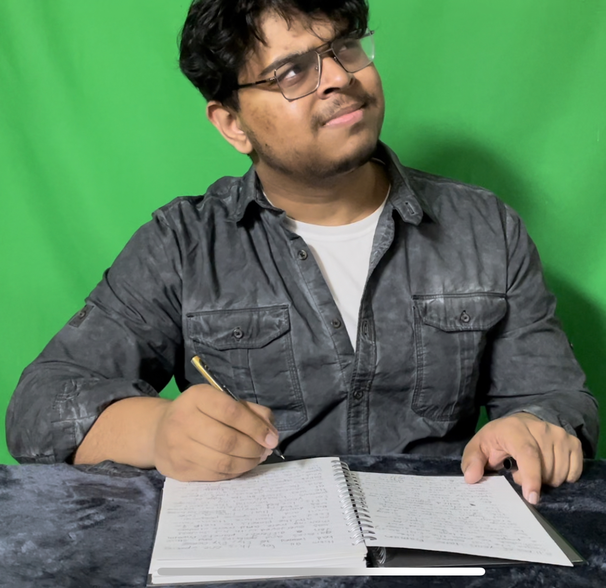
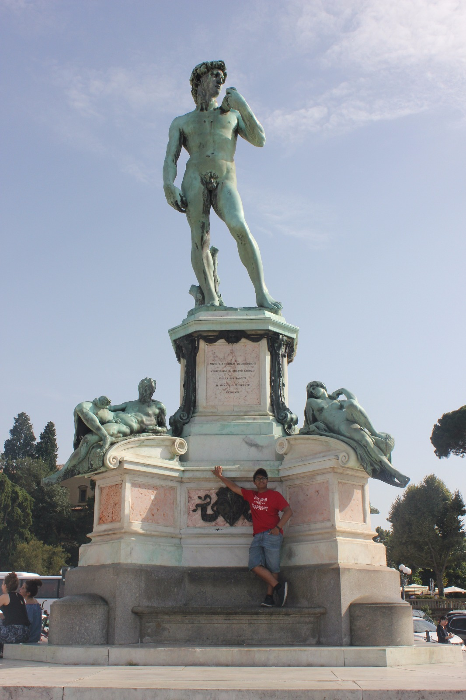
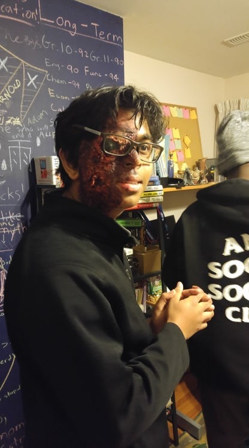

I'm also a fiction lover, with everything, but especially with books. I enjoy reading, writing, and critiquing books, so much so that I've written several novels and read hundreds of books. It is a major life passion of mine. The craft of planning, research, executing, editing, getting feedback, and working with novels to make them readable is very tough, but is a skill that has greatly helped my communication in text. I am a big proponent of the written word, and so I'm quite good at working on things involving it.
I am very passionate about things outside of my career as well. I have an interest in the arts, and this page will give you an overview of some of it. It might also clearify things in "Statistic" and "Projects". Firstly, there is my YouTube, which you can find at the top of the page. I have done hundreds of videos since 2015, and am still going strong. From Rubiks cube videos, to Pokemon cards, to comedy, and then music. I've explored every facet of my interests here on N Ugala. On the second YouTube, there is a book review channel, where I review books and talk about fantasy. There is an assortment of book related content there, all of which I find very interest.

